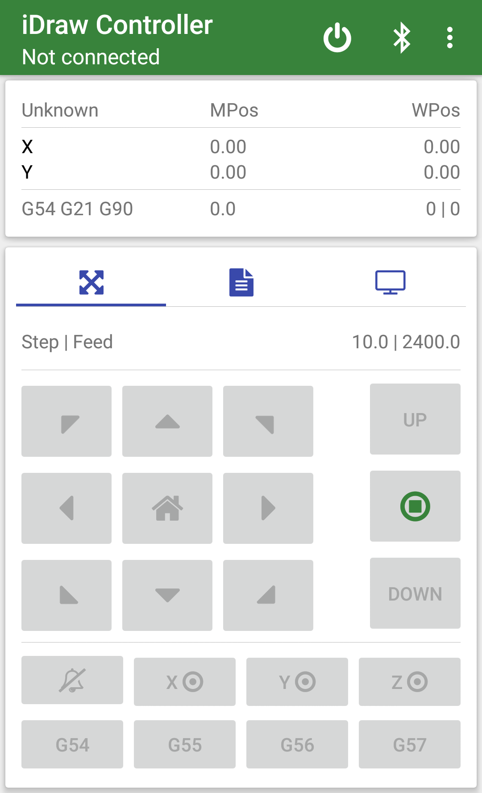

Figure-1: Application Title Bar
Application Title Bar
Application title bar consists of two or more quick action buttons. Number of visible buttons depends on the screen size of the device.
-
Grbl reset button.
Pressing reset button will send a soft reset signal to machine.
You can configure this button to ask for a confirmation (which is default) before doing a soft reset, this will prevent any accidental reset of the machine.
-
Bluetooth connect and disconnect button.
-
Not connected to any device.
Clicking on this button will bring you list of paired devices in your phone,
where you can select the device you want to connect to.
-
Connected to a Bluetooth device.
When in already connected state clicking on the button will give you a prompt to disconnect the device.
-
Ellipsis or hidden menu.
Access to additional menu items like "Settings", "Share", "About" etc..

Figure-1: Not connected screen
Figure-2: Connected screen